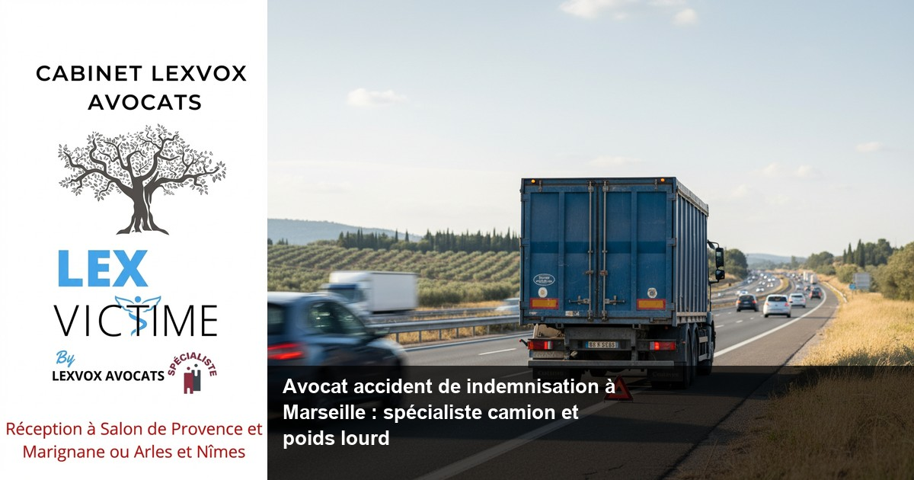

Accident de la route — Marseille
Avocat accident de indemnisation à Marseille : spécialiste camion et poids lourd

— Par Me Patrice Humbert, avocat au barreau d'Aix-en-Provence
Avocat accident de camion indemnisation Marseille : expertise LEXVOX pour votre réparation intégrale après accident de poids lourd
Victime d'un accident de camion à Marseille ? Un avocat spécialisé en dommage corporel vous accompagne pour obtenir une indemnisation intégrale. Cabinet LEXVOX AVOCATS, plus de 20 ans d'expérience exclusive en réparation du préjudice corporel. Consultation gratuite 30 minutes au 04 90 54 58 10.Obtenir la meilleure indemnisation possible : indemnisation des victimes et droit du dommage corporel à Marseille
Les accidents de camion représentent une part significative des accidents de la route les plus graves à Marseille. Selon l'expérience du cabinet LEXVOX (20+ ans, centaines de dossiers), ces sinistres impliquant des poids lourds sur les axes A7, A50, A55 et L2 génèrent souvent des préjudices corporels majeurs nécessitant une indemnisation des victimes adaptée à la gravité des séquelles.
L'expertise juridique face aux accidents de poids lourds
Le droit du dommage corporel applicable aux accidents de camion présente des spécificités techniques importantes. Un avocat spécialisé maîtrise les régimes d'assurance professionnelle des transporteurs, les responsabilités multiples (conducteur, entreprise de transport, donneur d'ordre) et les montants d'indemnisation élevés justifiés par la gravité des blessures.
À Marseille, deuxième ville de France avec plus de 3 800 accidents de la route par an, les collisions avec des poids lourds représentent un enjeu majeur de sécurité routière. L'expertise médicale révèle systématiquement des préjudices corporels sévères : traumatismes crâniens, fractures multiples, séquelles neurologiques permanentes.
Les spécificités de l'indemnisation après accident de camion
Contrairement à un accident de la route classique entre véhicules légers, l'accident impliquant un camion génère des dommages corporels d'une ampleur particulière. La différence de masse entre un poids lourd (40 tonnes) et une voiture (1,5 tonne) explique la sévérité des blessures et justifie une indemnisation substantielle.
L'assurance du transporteur dispose généralement de garanties élevées (souvent 10 millions d'euros minimum), permettant une réparation intégrale des préjudices sans limitation de plafond. Cette situation contraste avec certains accidents où les garanties d'assurance s'avèrent insuffisantes face à l'ampleur des séquelles.
Accompagner par un avocat : un accident de la route et faire appel à un avocat à Marseille
Faire appel à un avocat spécialisé après un accident de la route impliquant un camion constitue une démarche essentielle pour protéger vos droits. L'assistance d'un avocat permet d'éviter les pièges classiques de la procédure d'indemnisation et de négocier efficacement avec les assureurs professionnels.L'importance de l'accompagnement juridique précoce
Suite à un accident de camion, les compagnies d'assurance déploient immédiatement leurs équipes d'experts pour minimiser leur exposition financière. Sans la présence d'un avocat, la victime se trouve en situation de déséquilibre face à ces professionnels de la négociation.Un avocat expérimenté en droit du dommage corporel maîtrise les techniques d'évaluation des préjudices spécifiques aux accidents graves. Il sait identifier tous les postes de préjudice indemnisables, y compris ceux que les victimes ignorent souvent : préjudice d'agrément, préjudice esthétique, préjudice sexuel, préjudice d'établissement.
La stratégie juridique adaptée aux accidents de poids lourds
L'avocat expert en accidents de camion développe une stratégie globale intégrant plusieurs dimensions :
- Analyse technique des circonstances de l'accident (chronotachygraphe, temps de conduite, état du véhicule)
- Identification de toutes les responsabilités (conducteur, employeur, sous-traitant)
- Évaluation médico-légale complète des séquelles
- Négociation avec les multiples intervenants d'assurance
Cette approche globale permet d'obtenir une indemnisation maximale correspondant à la réparation intégrale du préjudice subi.
Expert en indemnisation : défense des victimes et réparation intégrale à Marseille
L'expert en indemnisation LEXVOX AVOCATS met son savoir-faire au service de la défense des victimes d'accidents de camion. Avec plus de 20 ans d'expérience exclusive en dommage corporel, le cabinet maîtrise toutes les subtilités de la réparation intégrale.
L'expertise médicale : enjeu central de l'indemnisation
L'expertise médicale constitue l'étape déterminante de la procédure d'indemnisation. Face au médecin-conseil de l'assureur, la victime doit bénéficier de l'assistance d'un médecin-conseil de victimes et de son avocat spécialisé en indemnisation.
Les séquelles d'un accident de camion nécessitent souvent l'intervention de plusieurs spécialistes : neurologue, orthopédiste, psychiatre, ophtalmologue. L'avocat de victimes coordonne cette expertise pluridisciplinaire pour garantir une évaluation exhaustive des préjudices.
Selon l'expérience du cabinet LEXVOX (20+ ans, centaines de dossiers), les victimes d'accidents de poids lourds présentent fréquemment :
- Des incapacités temporaires totales prolongées (6 à 18 mois)
- Des incapacités permanentes partielles importantes (20 à 50%)
- Des séquelles psychologiques durables (syndrome post-traumatique)
- Des préjudices professionnels majeurs (inaptitude, reconversion)
Les spécificités marseillaises de l'indemnisation
À Marseille, le Tribunal judiciaire traite régulièrement des dossiers d'accidents de camion sur les grands axes de circulation. Les magistrats appliquent le référentiel d'indemnisation national tout en tenant compte des particularités locales : coût de la vie, revenus moyens, offre de soins.
Les établissements hospitaliers marseillais (AP-HM Timone, Nord, Conception, Hôpital Saint-Joseph) disposent d'expertises reconnues en traumatologie grave. Cette qualité des soins influence positivement l'évaluation des préjudices temporaires et de la réduction de l'incapacité permanente.
Accident de la vie : avocat de victimes et avocat spécialisé à Marseille
Un accident de la vie aussi traumatisant qu'une collision avec un camion bouleverse l'existence de la victime et de sa famille. L'avocat de victimes LEXVOX AVOCATS comprend cette dimension humaine et accompagne chaque client avec empathie et professionnalisme.L'approche humaine de la défense des victimes
Défendre les victimes d'accidents graves nécessite une approche globale intégrant les aspects juridiques, médicaux, psychologiques et sociaux. L'avocat spécialisé devient le référent unique de la victime face à la multiplicité des intervenants : médecins, experts, assureurs, administrations.Cette coordination évite à la victime la dispersion de ses efforts et garantit la cohérence de sa défense. Chaque élément du dossier contribue à l'objectif central : obtenir la meilleure indemnisation possible correspondant à la réparation intégrale du préjudice.
Les **accidents de la vie** et leurs conséquences multiples
Les victimes d'accidents de la route impliquant des poids lourds subissent des répercussions dans tous les domaines de leur existence :
Vie familiale : modification des relations conjugales, impact sur les enfants, nécessité d'aides humaines Vie professionnelle : arrêt de travail prolongé, inaptitude, reconversion forcée, perte de revenus Vie sociale : isolement, difficultés de déplacement, abandon d'activités Vie personnelle : souffrance physique et psychique, perte d'autonomie, préjudice d'agrémentL'indemnisation intégrale vise à compenser financièrement l'ensemble de ces préjudices selon le principe de la réparation intégrale sans perte ni profit pour la victime.
Une indemnisation : assurance et expertise à Marseille
Obtenir une indemnisation juste après un accident de camion nécessite une connaissance approfondie des mécanismes d'assurance et des techniques d'expertise. Les enjeux financiers élevés justifient l'intervention d'un avocat spécialisé.Les régimes d'assurance des transporteurs professionnels
Les entreprises de transport souscrivent des polices d'assurance spécifiques couvrant leur responsabilité civile professionnelle. Ces contrats prévoient généralement :
- Des garanties élevées (5 à 50 millions d'euros)
- Des extensions de garantie (marchandises transportées, pollution accidentelle)
- Des franchises importantes (50 000 à 200 000 euros)
- Des exclusions particulières (faute inexcusable, état d'ébriété)
L'avocat expert analyse ces polices d'assurance pour identifier toutes les sources d'indemnisation et optimiser la stratégie de négociation.
L'expertise contradictoire : garantie d'objectivité
Face aux enjeux financiers des accidents de camion, les assureurs designent systématiquement des experts confirmés pour évaluer les dommages. La victime doit impérativement faire désigner son propre expert ou bénéficier de l'assistance de l'expert judiciaire en cas de procédure contentieuse.
Cette expertise contradictoire garantit l'objectivité de l'évaluation et permet de contester les conclusions manifestement insuffisantes de l'expert d'assurance. L'avocat coordonne cette expertise et veille au respect des droits de la victime tout au long de la procédure.
Préjudice et honoraire : votre avocat à Marseille
L'évaluation précise du préjudice et la négociation de l'indemnisation justifient l'intervention d'un avocat spécialisé. Le cabinet LEXVOX AVOCATS pratique une politique tarifaire transparente adaptée aux enjeux de chaque dossier.
L'évaluation exhaustive des préjudices
Un accident de camion génère une multitude de préjudices qu'il convient d'identifier et d'évaluer avec précision :
Préjudices patrimoniaux :- Frais médicaux actuels et futurs
- Perte de revenus (arrêt de travail, incapacité)
- Frais d'adaptation du logement et du véhicule
- Assistance tierce personne
- Frais divers (transport, hébergement famille)
- Déficit fonctionnel temporaire et permanent
- Souffrances endurées
- Préjudice esthétique
- Préjudice d'agrément
- Préjudice sexuel
L'avocat spécialisé maîtrise les méthodes d'évaluation de chaque poste et les référentiels jurisprudentiels applicables.
La politique d'honoraires transparente
Le cabinet LEXVOX AVOCATS pratique un système d'honoraires mixte adapté aux dossiers de dommage corporel :
- Part fixe à partir de 700 euros HT pour la constitution du dossier
- Honoraires de résultat de 10 à 15% selon la complexité
- Prise en charge des frais d'expertise et de procédure
- Possibilité de prise en charge par la protection juridique
Cette approche permet à toutes les victimes d'accidents de bénéficier d'une défense de qualité sans avancer les frais de la procédure.
Procédure d'indemnisation à Marseille : les étapes avec LEXVOX AVOCATS
La procédure d'indemnisation après un accident de camion suit un processus structuré que l'avocat LEXVOX AVOCATS maîtrise parfaitement. Chaque étape de la procédure nécessite une expertise particulière pour optimiser le résultat final.
Phase amiable : négociation avec l'assureur
La négociation amiable représente la voie privilégiée de règlement des sinistres. Elle présente l'avantage de la rapidité et de la maîtrise des coûts, tout en évitant les aléas de la procédure judiciaire.
Étape 1 : Constitution du dossier médical- Rassemblement de toutes les pièces médicales
- Consultation des spécialistes nécessaires
- Évaluation des séquelles définitives
- Chiffrage provisoire des préjudices
- Présentation du dossier de demande d'indemnisation
- Expertise médicale contradictoire si nécessaire
- Discussion des évaluations et des montants
- Recherche d'un accord global
Selon l'expérience du cabinet LEXVOX (20+ ans, centaines de dossiers), 70% des dossiers d'accidents de camion trouvent une solution amiable satisfaisante dans un délai de 12 à 18 mois.
Phase judiciaire : saisine du tribunal

Vos questions sur avocat accident de indemnisation à marseille : spécialiste c
Dois-je absolument prendre un avocat après un accident de camion ?
Si la loi ne l'impose pas, **l'assistance d'un avocat** spécialisé s'avère quasi indispensable dans les accidents de camion. Les enjeux financiers élevés et la complexité juridique justifient cette précaution. L'**avocat** négocie généralement une **indemnisation** supérieure à ses honoraires.
Combien de temps dure une procédure d'indemnisation ?
La durée varie selon la voie choisie : 12 à 18 mois en **négociation amiable**, 2 à 3 ans en procédure judiciaire. La gravité des séquelles influence cette durée car il faut attendre la consolidation médicale pour évaluer les **préjudices** définitifs.
Puis-je refuser l'expertise médicale de l'assureur ?
L'expertise médicale s'impose généralement à la victime, mais celle-ci peut se faire assister par son **médecin-conseil** et son **avocat**. En cas de désaccord, une expertise judiciaire contradictoire permet de départager les positions.
Quels sont mes recours si je ne suis pas satisfait de l'offre d'indemnisation ?
Plusieurs options s'offrent à vous : négociation complémentaire avec l'**assureur**, saisine de la commission d'indemnisation (si applicable), procédure judiciaire devant le **Tribunal judiciaire de Marseille**. Votre **avocat** vous conseille sur la stratégie optimale.
L'indemnisation couvre-t-elle tous mes préjudices ?
Le principe de **réparation intégrale** impose à l'**assureur** d'indemniser **l'intégralité de vos préjudices** : médicaux, professionnels, personnels, moraux. Seuls les **préjudices** causés par l'accident et suffisamment certains donnent droit à **indemnisation**.
Comment prouver l'étendue de mes préjudices ?
La preuve repose sur les certificats médicaux, les arrêts de travail, les factures, les témoignages. L'**expertise médicale** officialise l'évaluation des séquelles. Votre **avocat** constitue ce dossier probatoire avec rigueur.
Synthèse : votre droit à la réparation intégrale ?
Le **droit du dommage corporel** garantit à chaque **victime d'un accident** le principe fondamental de **réparation intégrale**. Cette **indemnisation intégrale** vise à replacer la victime dans la situation qui aurait été la sienne sans l'accident. Pour **obtenir une indemnisation** optimale après **un accident** de camion, **faire appel à un avocat** spécialisé constitue la démarche la plus sûre. L'**avocat spécialiste** en **indemnisation préjudice corporel** maîtrise **l'ensemble de vos préjudices** et négocie avec les **compagnies d'assurance** sur un pied d'égalité. **Suite à un accident** grave, **l'assistance d'un avocat** devient indispensable face à la complexité de la **procédure d'indemnisation**. L'**avocat expérimenté** analyse **les circonstances de l'accident**, identifie le **responsable de l'accident** et évalue chaque **poste de préjudice**. Cette expertise juridique permet aux **victimes d'accidents de la route** d'**obtenir la meilleure indemnisation possible** correspondant à leurs **droits des victimes**. L'**avocat expert** en **réparation du dommage corporel** accompagne **les victimes d'accidents** dans leur combat pour une **indemnisation juste**. La **défense des victimes d'accidents** nécessite une connaissance approfondie des mécanismes d'**indemnisation d'un accident**. Chaque **victime d'accident** mérite **une indemnisation** à la hauteur de ses souffrances. L'**avocat spécialisé en indemnisation** mobilise son expertise pour **défendre les victimes** face aux assureurs. Qu'**un accident** de camion bouleverse votre existence, la **présence d'un avocat** garantit le respect de vos droits. Les **victimes d'accidents de la route** peuvent compter sur l'**accompagner par un avocat** pour transformer leur **arrêt de travail** et leurs séquelles en **réparation du préjudice corporel** équitable. L'**indemnisation accident** implique l'évaluation de multiples **postes de préjudice** par le **médecin-conseil de victimes**. **Les indemnisations** varient selon la gravité des séquelles mais visent toujours la **meilleure indemnisation**. Les **accidents de la vie** marquent les **victimes d'accidents** qui méritent **une indemnisation complémentaire** couvrant tous leurs préjudices. **Les victimes d'accident** bénéficient ainsi d'une protection juridique complète grâce à la **défense des victimes d'accidents** assurée par des professionnels compétents.
Procédure d'indemnisation à Marseille : les étapes avec LEXVOX ?
Le cabinet LEXVOX AVOCATS structure la **procédure d'indemnisation** en étapes claires pour optimiser vos chances de succès. Notre méthode éprouvée depuis plus de 20 ans garantit un suivi rigoureux de votre dossier.
Première consultation gratuite — 30 min
Besoin d'un avocat spécialisé à Marseille ? Nous évaluons votre dossier gratuitement et vous indiquons vos droits à réparation.
Cabinet LEXVOX AVOCATS — Me Patrice Humbert — Spécialisation CNB dommage corporel — Bureaux à Aix-en-Provence, Salon-de-Provence, Arles et Marignane